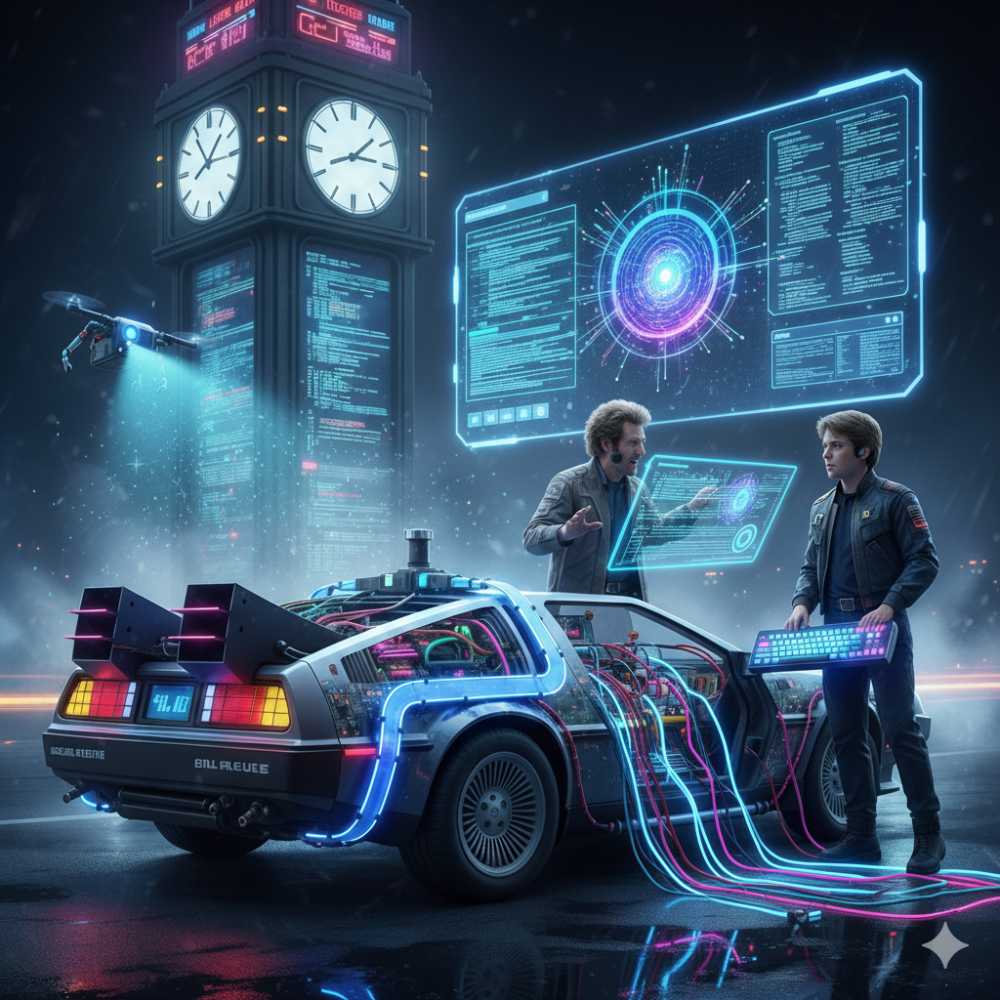

Bienvenido al Blog de Gael Guiffrey
Soy estudiante de Sistemas y apasionado por el desarrollo web y la tecnología. Este espacio es donde comparto lo que aprendo, experimento y descubro en el camino del código.
Entrar al blog
Soy estudiante de Sistemas y apasionado por el desarrollo web y la tecnología. Este espacio es donde comparto lo que aprendo, experimento y descubro en el camino del código.
Entrar al blog